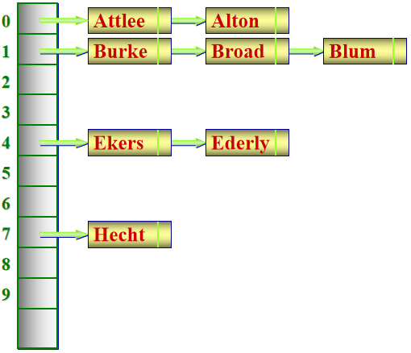

散列表/哈希表
✍ 1203 words | 🐛 39 codelines | ⏰ 4 min read | Enjoy 🎶
一种理想情况下能够实现 $O(1)$ 复杂度的键 -> 值查询、插入、删除的数据结构
简单来说（不考虑哈希冲突）就是实现这样的过程：$key \to array[f(key)] \to value$，或者说，我希望查询键 $key$ 对应的值，根据 $O(1)$ 哈希计算我可以定位到存储值的内存地址
哈希函数
最简单的 hash 函数：对于任意的 $key$ 为正整数，哈希函数 $f(key) =key$，索引 $a[f(key)] = value$，这其实就是一个普通数组，并且这个函数是线性的，没有进行压缩
假设键值是非常大的整数，直接对 $array$ 取大下标不可取，此时选择一个较大质数 $N$，哈希函数 $f(key) = key \bmod N$，这个函数是压缩式的
为了实现对任意的数据类型都能达到像普通数组一样的效果，需要将不同类型的 $key$ 通过哈希函数映射到内存对应位置（也就是 $array[f(key)]$）
比如 $key$ 为字符串 $s$，我们有若干种哈希函数的构造方案：
1 - $f(key) =(𝑠_0 ⋅127^0 +𝑠_1 ⋅127^1 +𝑠_2 ⋅127^2 +⋯ +𝑠_𝑛 ⋅127^𝑛) \bmod 2^{64}$
2 - 先对单个字符进行映射，每个字符映射到一个不同的小质数：$g[char] = N_{char}$
$f(key) = (s_0 \cdot N_0 \cdot s_1 \cdot N_1 \cdot s_2 \cdot N_2 \cdot \cdots \cdot s_n \cdot N_n) \bmod 2^{64}$
... ...
哈希冲突
因为哈希函数通常是压缩实现，不同的 $key$ 有可能映射到相同的 $f(key)$
比如 $f(key) = (s_0 \cdot N_0 \cdot s_1 \cdot N_1 \cdot s_2 \cdot N_2 \cdot \cdots \cdot s_n \cdot N_n) \bmod 2^{64}$ 的字符串哈希函数，容易发现函数对同一组异位词（比如 listen 与 silent）都返回相同的哈希值，此时会出现哈希冲突
处理冲突的方法分为闭散列方法和开散列方法
闭散列：线性探查法
所有元素都存储在哈希表数组本身中，当发生冲突时，按照某种探测方法在数组中寻找下一个空位置。
对于线性探查法，当遇到哈希冲突时，依次向后寻找不冲突的位置进行存放
例：${ 47,7,29,11,16,92,22,8 }$ 按照 $f(key) = key \bmod {11}$ 的规则存储到长为 $11$ 的哈希表：
0 1 2 3 4 5 6 7 8 9 10 11 22 47 92 16 7 29 8 不难发现有些元素（加粗的数值）被 “挤到后面去了”，所以在哈希表查询时，我需要在定位到这个元素的 index 之后，（如果没有直接匹配到）继续往下搜索，直到遇到 NULL（哈希表中无此元素）或者找到元素
这里给出一个更完整的表格，记录了对于每个
index，查表成功与查找失败的情况下的查找长度（从定位到 index 到找到实际值总共需要遍历的元素个数）：
index 0 1 2 3 4 5 6 7 8 9 10 val 11 22 47 92 16 7 29 8 搜索成功时的搜索长度 1 2 1 1 1 1 2 2 搜索失败时的搜索长度 3 2 1 4 3 2 1 4 3 2 1 闭散列最大的问题是散列表的大小固定，我们记装载因子 $\alpha = n / table_size$
当 $\alpha$ 接近 $1$ 时，哈希表的查找速率和线性表 $O(n)$ 差异很小
$\alpha$ 不能 $\geq 1$，因为闭散列容量固定且有限
只有 $\alpha$ 较小时闭散列才适合使用，比如 $\alpha < 0.7$
开散列：拉链法
$array[f(key)]$ 不存储单个值，而是存储 $[key, value, next]$ 链表（或者其他链式容器），在构造哈希表时，对于相同的哈希值采用插入链表节点的方式储存值（注意键和值都要插入），在搜索时，遇到哈希冲突的情况就可以在链表中遍历搜索（埋下伏笔）
（也就是说，拉链法的哈希桶存储的是链表指针，而不是 $value$）
这里给出一张来自课件的示意图

STL unordered_map 库
unordered_map 是哈希表的实现，相对于 map，其不保证元素有序，但是理想查询速度为 $O(1)$
在应对哈希冲突的时候采用拉链法：
1 2 3 4 5 6 7 8 9 10 11 12 13 14 15 16 17 18 19 20 21 22 23 24 | |
unordered_map 的缺点在于其常数因子高（建立哈希表开销），某些情况下效率不如 map
哈希爆破
注意到对于一个哈希函数，如果人为构造一系列哈希冲突，就会在哈希表的同一个点生成一条很长的链表，在链表上的查询最坏退化到 $O(n)$
[某一个哈希值] -> key1 -> key2 -> key3 -> ... -> keyBIG
这个很著名的 blog 解释了为什么不要直接使用 unordered 容器
一种好的解决方法是：如果数据不是很大，使用 <map>，用法和 <unordered_map> 是一样的
还有一种方式是使用 gnu 编译器的 pbds 库：
pb_ds 库的哈希表
1 2 3 4 5 6 | |
赛场上通常更倾向于使用 gp_hash_table，其性能比原生 unordered_map 更优，也更难被爆破
追求极限可以以时间戳作为随机化参数：（引用：C++ pb_ds 食用教程 - 洛谷专栏）
1 2 3 4 5 6 7 8 9 | |